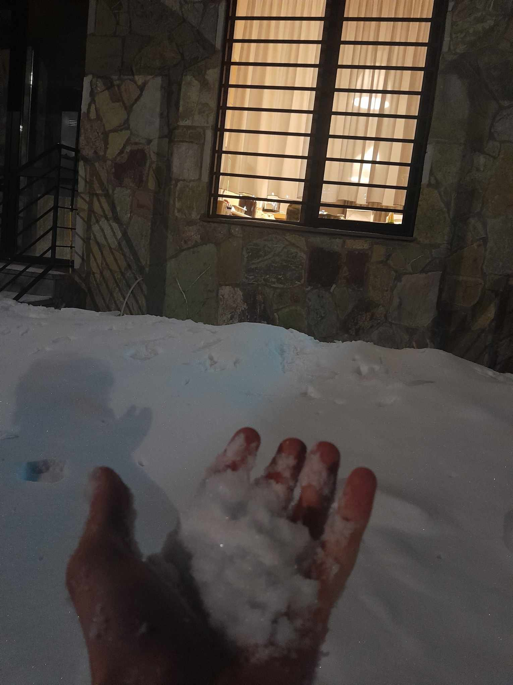

ადგილი წესით უნდა გეცნობოდეთ, აი ამ ადგილთან ახლოს კი ჩემი ინფორმაციით ერთი ტყეა, რომელსაც ძველი ბერძნების დედან წყაროებში ემოციათა როლერკოსტერის სახელით მოიხსენიებენ. ამ ემოციათა ნიაღვარში ორი ახალგაზრდა დადიოდა დრო გამოშვებით, მათგან ერთ-ერთმა კი მრავალი ხნის დანაპირები აასრულა და რაღაცა დამალა, მისანიშნებლად კი ყვითელი თასმით შემოხვეული ქვა დატოვა, ცერცე ეგ ქვა და ტროვებ საგანძურსაც, ფეხით გადაყარ-გადმოყარე ბალახები

